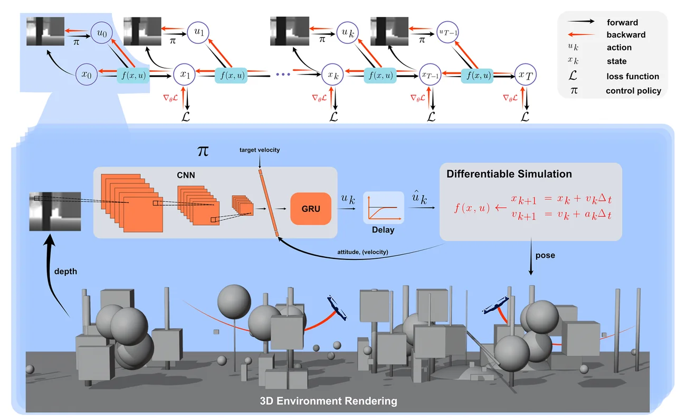

All projects全部项目
Docking scenario — several UGVs, one UAV, one battery pack接驳场景 —— 多台无人车、一架无人机、一组电池
01
02
03
Multi-vehicle scheduling with differentiable physics可微物理多车调度
Internship · Meituan实习 · 美团
Multi-vehicle docking & battery swap多车接驳与换电
Several ground vehicles coordinate to dock a drone and swap its battery — scheduling and avoidance with differentiable physics, benchmarked against EGO-Swarm.多台无人车协同接驳无人机并完成换电 —— 用可微物理做调度与避障，并与 EGO-Swarm 对比。

Motivation动机
Drone delivery is limited by battery, not by flight. The vehicle has to arrive under the drone, dock, swap the pack and leave — while other vehicles move through the same space.
无人机配送的瓶颈是电池，不是飞行。地面车要开到无人机下方、完成接驳、换电再驶离 —— 而同一片场地里还有别的车在跑。
What I built做了什么
- Trained and deployed the differentiable-physics model for multi-vehicle scheduling and obstacle avoidance.
- Integrated and tuned EGO-Swarm as the classical baseline, then compared it against the learned policy.
- Ran the comparison on real vehicles, not only in simulation.
- 负责可微物理模型的训练与部署，用于多车调度与避障。
- 接入并调优 EGO-Swarm 作为经典基线，与学习策略对比。
- 在实车上跑对比，不只在仿真里。
Results效果
The learned scheduler runs the docking/swap cycle with several vehicles in the same arena. Clips below show the arena and the resulting trajectories.
学习得到的调度器可以在同一片场地里、多车同时作业的情况下跑完接驳与换电流程。下面几段是场地与轨迹记录。